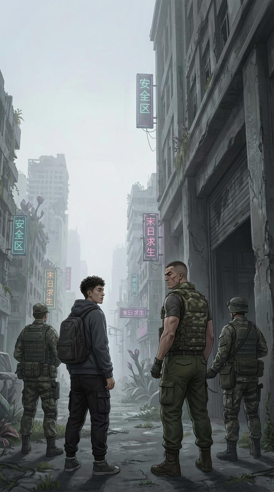
黎明。方队挑了两名身手最好的手下——大刘和阿坤，跟我站在分拣中心门口。四人背着简装，雾气把废墟染成灰白色。
创业十几年，第一次觉得"市场调研"可能真的会要命。
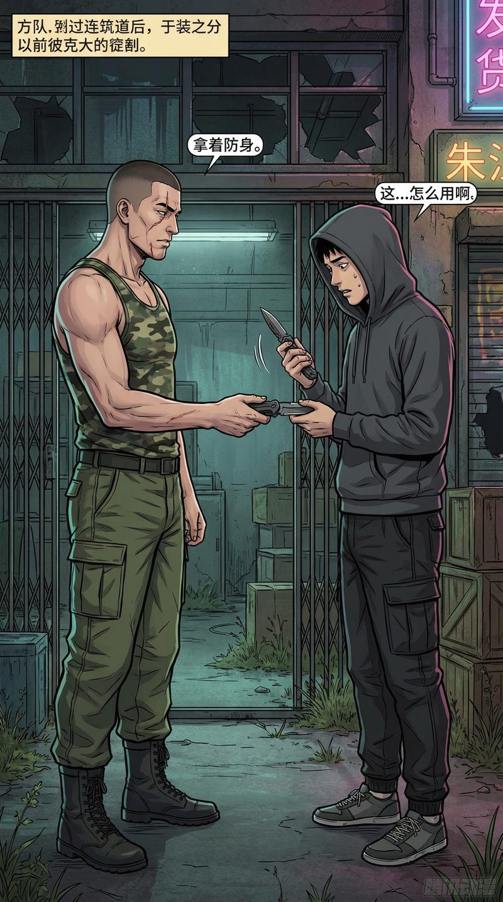
方队检查装备，递给我一把折叠刀。
会用吗？
我接过来，笨拙地翻开又合上。
上辈子最危险的工具是PPT激光笔。
方队面无表情。
……跟紧我。别出声。
📋 温馨提示：您的战斗力评估为D-。建议：保持在方队身后3米处。这叫——战略纵深。
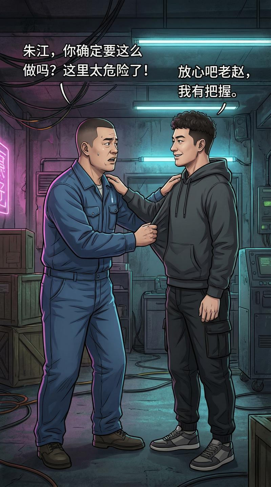
老赵拉住我袖子。
朱总，要不……你别去了？
我拍拍他肩膀。
赵哥，CEO不能只在办公室看报表。实地考察是基本功。
你考察的是杀人放火的团伙啊！
……商业竞争对手。换个说法。
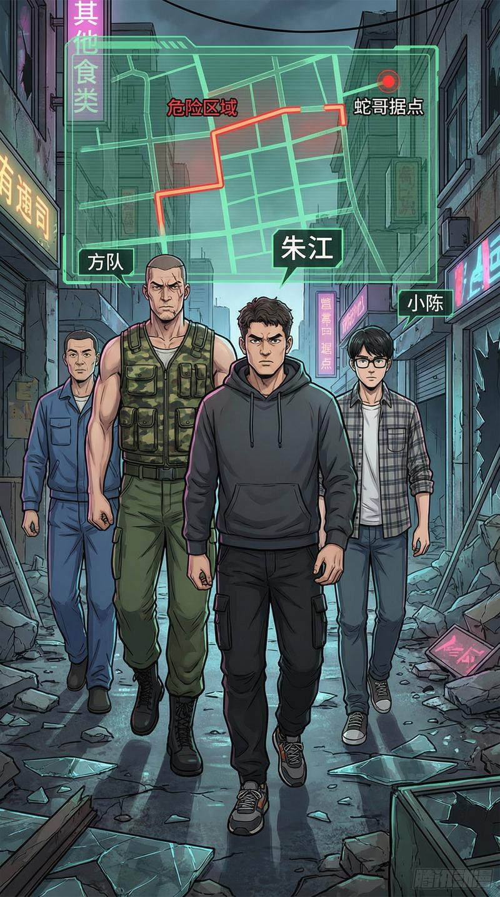
四人穿过废墟街道向东移动。方队在前，两个手下侧翼，我在中间——标准军事菱形队列。系统地图浮现：路线标注、危险区域红色高亮、蛇哥据点位置闪烁。
这队形……像极了创业路演走上台的感觉。前面是未知，两边是风险，我在中间假装淡定。
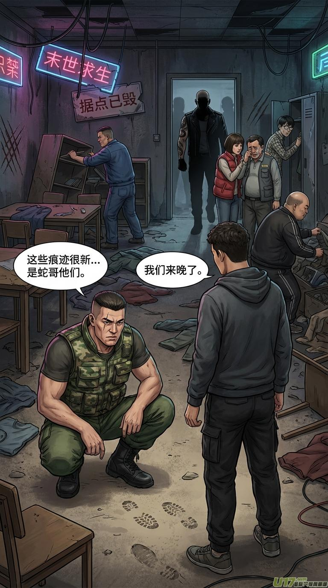
抵达被洗劫据点。满地狼藉——翻倒的桌椅、散落的衣物、墙上的抓痕。
方队蹲下检查地面。
专业的。搜刮很彻底，没浪费一点时间。
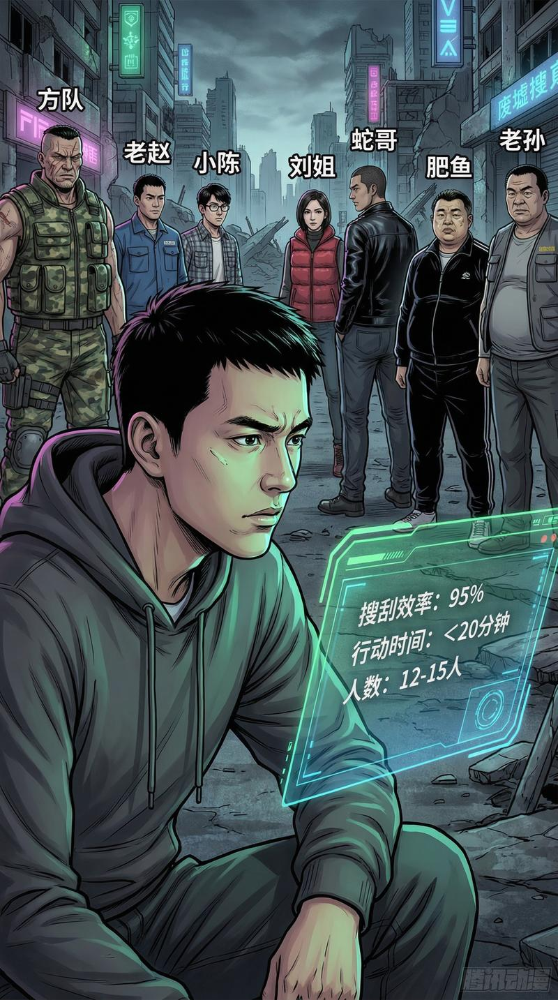
我蹲下来，系统自动扫描废墟，信息面板密密麻麻弹出——
🔍 物资搜刮效率：95%（极高）| 行动时间：<20分钟 | 人数：12-15人 | 特征：有预先情报，非随机搜索
95%搜刮效率……这不是打劫，这是"精益运营"。蛇哥不是土匪——他在运营一个抢劫公司。
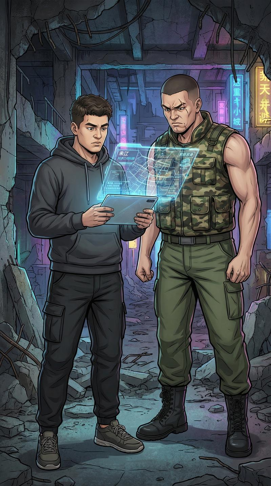
我拿出小陈给的平板，系统叠加周边数据。
方队，你看——被洗劫的据点，全在东南方向，间隔2-3公里，时间间隔2-3天。
方队皱眉看着地图。
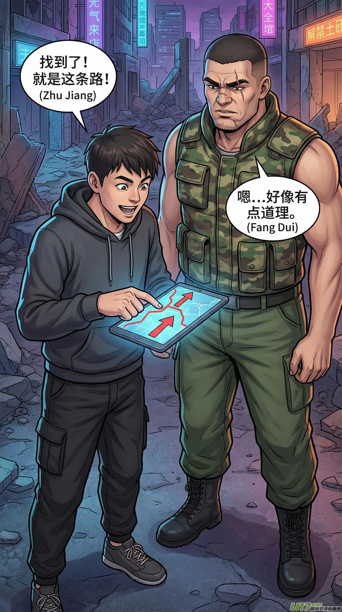
我用手指在地图上画了一条线。
从南到北，像收割机一样扫过来。每次抢完不回头，直接推进到下一个。
方队接话。
……补给线。他在边抢边建立补给线。
方队说对了。他不是在抢劫——他在打仗。抢劫的物资就是他的军粮。
📊 用户分析能力+10。您正在用竞品分析框架理解一个暴力团伙。不知道该夸您还是该担心您。
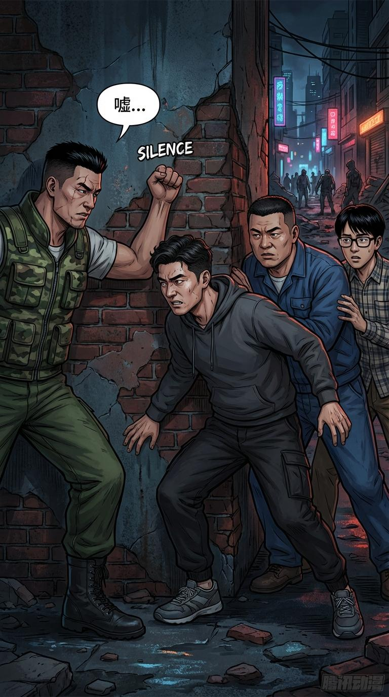
突然阿坤低声——
队长！东面200米，有人！
四人立刻贴墙隐蔽。方队手势示意禁声。
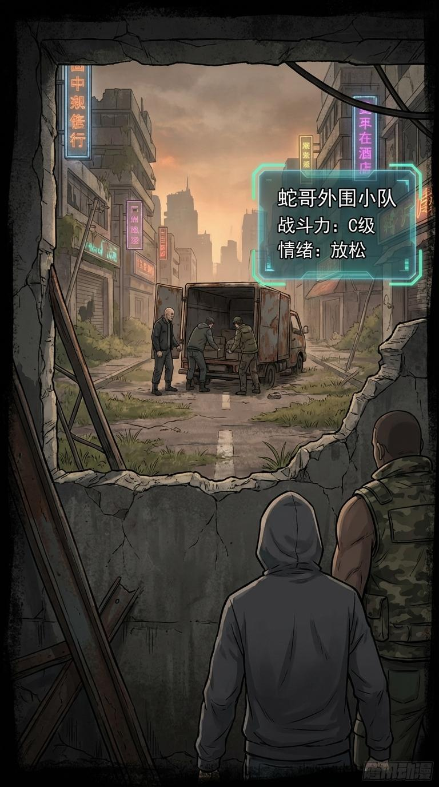
废墟街道尽头，三个人影在搜刮一辆废弃货车。其中一个光头——但不是蛇哥。是蛇哥的人。他们动作熟练，配合默契，十分钟清空了货车。
🎯 人员鉴定：蛇哥团伙外围搜刮小队 | 武装：棍棒+一把柴刀 | 战斗力：C级 | 情绪：放松（认为周边安全）
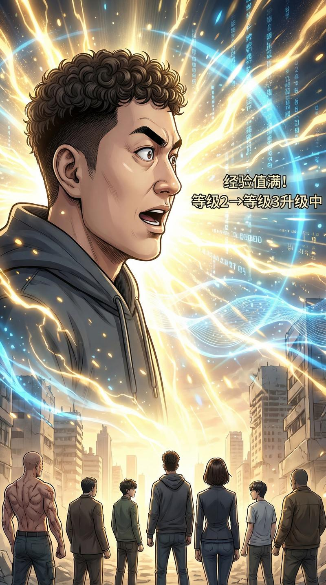
观察蛇哥小队撤退方向时，脑中系统突然再次震动——金蓝光芒充满视野。
⚡ 经验值满！等级2→等级3升级中……
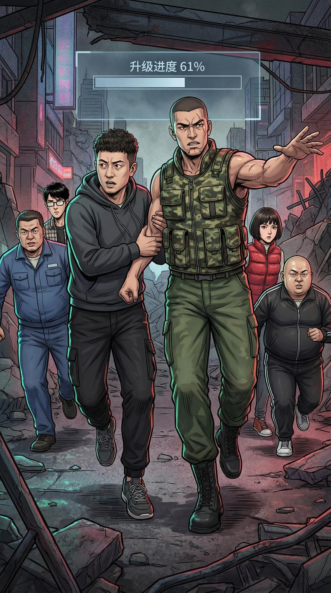
我抓住方队手臂低声。
撤，我有……情况。
方队一看我表情，没多问，果断手势指挥撤退。四人快速穿过废墟向西移动。
📶 升级进度12%……38%……61%……请保持意识清醒……
创业时至少系统更新不会在你跑路的时候强制进行。
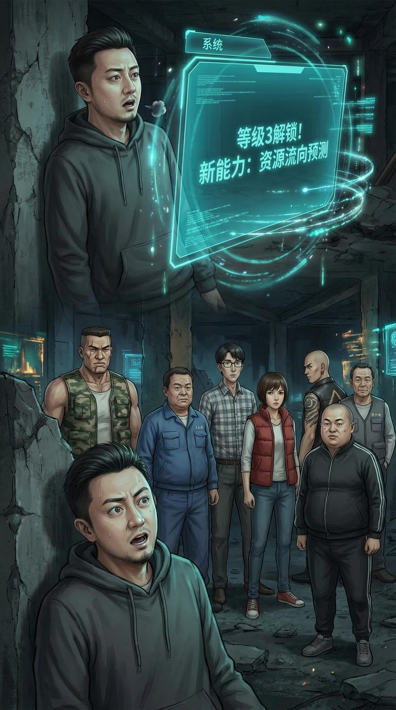
撤到安全距离。我靠墙，系统升级完成——新面板展开。
🆙 等级3解锁！新能力：【资源流向预测】——可预测指定区域内未来72小时的资源流动方向（物资、人员、信息）
等等……能预测资源流向？这不就是——供应链可视化？
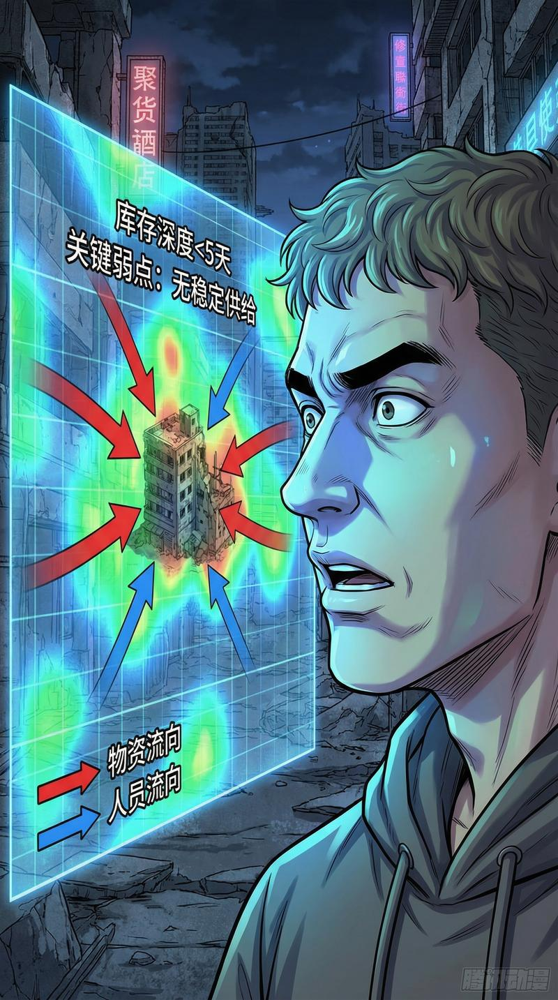
我立刻对蛇哥团伙方向激活等级3。系统生成一张热力图——红色箭头代表蛇哥的物资流向，蓝色代表人员流向。所有箭头最终汇聚到同一个点：城东南一栋商业大厦。
📊 物资消耗速率：高 | 库存深度：<5天 | 关键弱点：无稳定供给来源，完全依赖抢劫。一旦3天内无新目标，团伙将面临内部分裂。
他的商业模式——是烧钱模式。没有造血能力，全靠"融资"（抢劫）。只要切断他的"融资渠道"……
💡 恭喜您发现了竞品的致命缺陷。这在商业上叫"现金流断裂风险"。
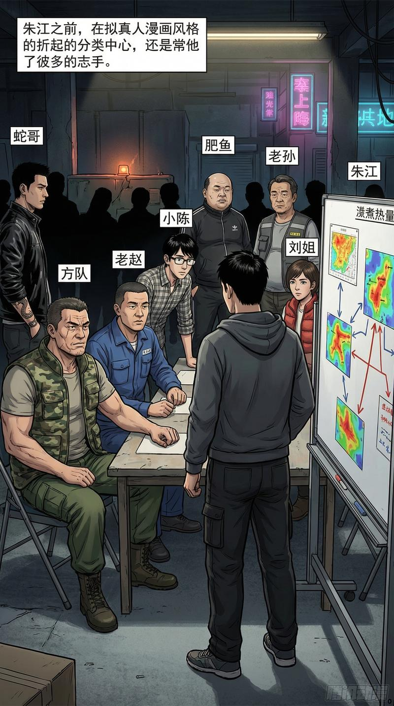
回到分拣中心。我立刻召集核心团队：方队、老赵、小陈、刘姐。白板上画出蛇哥的资源热力图。
各位，好消息和坏消息。坏消息：蛇哥团伙大概20人，武力是我们的三倍。好消息：他们的"商业模式"有个致命缺陷。
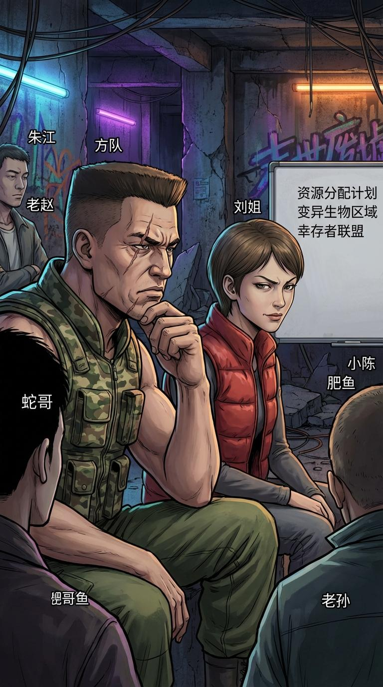
方队盯着白板。
什么缺陷？
我指着热力图。
他靠抢劫为生。物资库存不到5天。只要连续3天抢不到新目标，团伙就会因为分赃不均而内斗。
刘姐插嘴。
跟做生意一样——发不出工资的老板留不住人。
刘姐一语中的。
📋 刘姐的商业直觉：A+。建议未来考虑给她一个VP头衔。
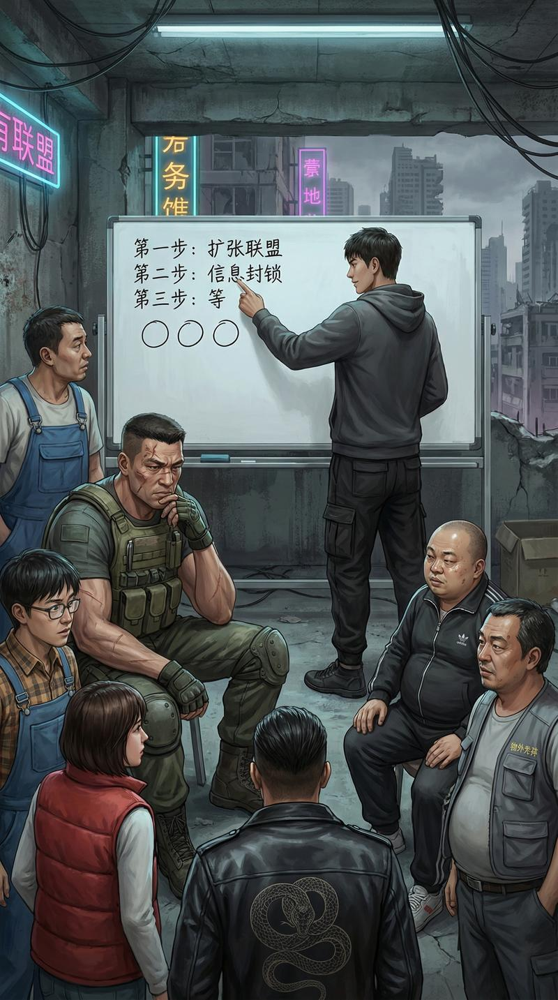
方队思考了一会儿。
所以你的意思是——不打他？
打不过就不打。咱们换个打法。
我在白板上画了三个圈——
第一步：扩张联盟。把蛇哥推进路线上还没被抢的据点全部拉进联盟，提前转移物资+加固防御。
第二步：信息封锁。用通讯网络给联盟据点实时预警蛇哥的行动方向，让他每次扑空。
第三步：等。等他3天抢不到东西，内部开始瓦解。
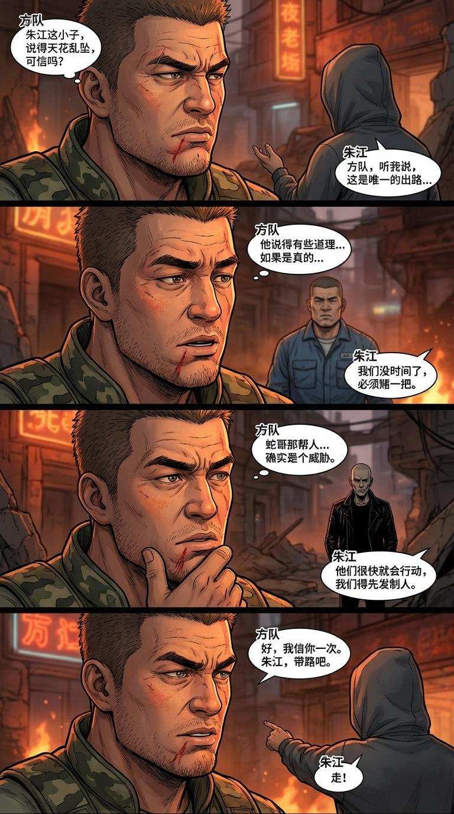
方队的表情从怀疑变成了若有所思。
你……是想饿死他？
在商业上这叫"护城河战略"。你不用打败竞争对手——你只需要让他的客户都选择你。
客户？他抢劫的对象？
对。被抢的据点就是他的"客户"。我们把"客户"全抢过来，他就没得抢了。
📊 策略评级：A。风险评级：B+。备注：这个CEO真的把打仗当做生意在做。方队的表情说明他开始习惯了。
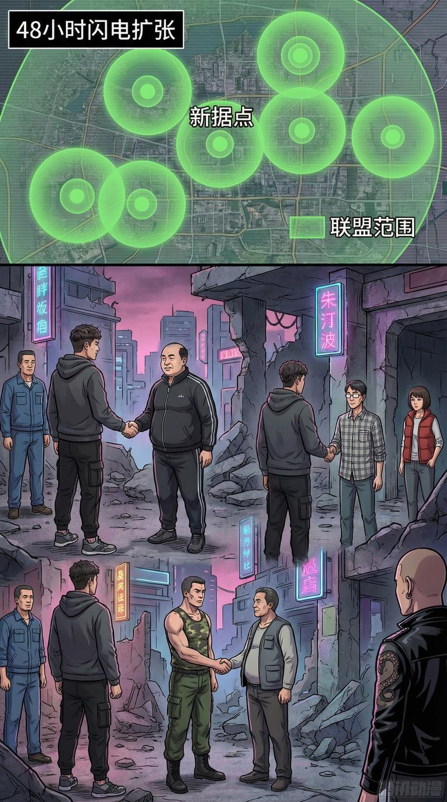
48小时闪电战。朱江+方队面谈了3个大据点：一个前物业公司（20人有工具），一个超市残部（15人有食物），一个大学生团体（8人有太阳能充电设备）。
每次谈判核心话术一样——"加入联盟有通讯+安保，不加入等蛇哥来抢。"
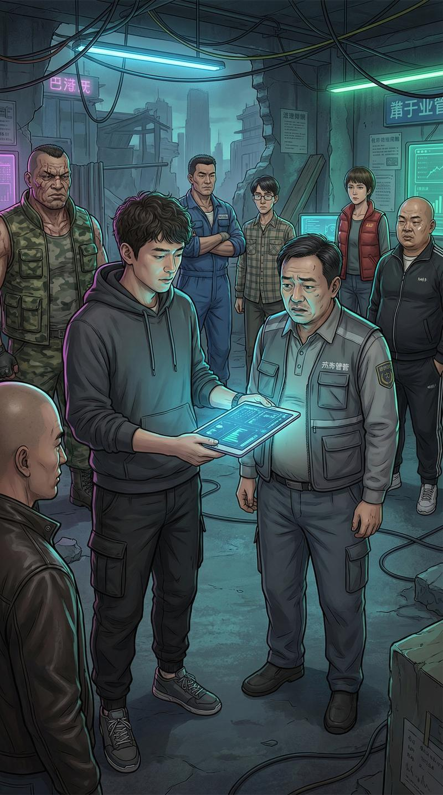
物业公司的头目老孙犹豫了。
你凭什么保证那个蛇什么哥会来抢我们？
我激活等级3预测——在平板上展示蛇哥未来72小时推进路线，红色箭头直指老孙据点。老孙的脸色变了。
💡 恐惧是最好的销售工具——但请注意，您提供的是真实信息，不是恐吓。这在商业伦理上叫"风险告知"。
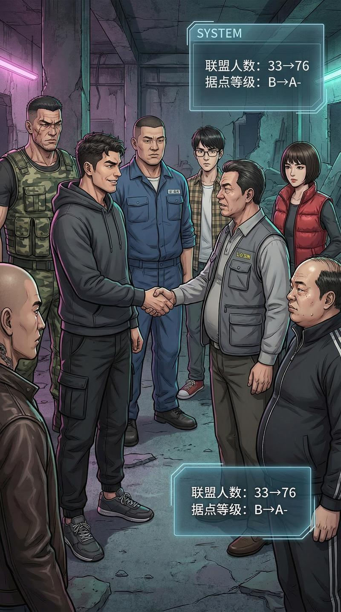
老孙伸出手。
加！怎么加？
很简单。通讯接入，情报共享，物资互助，遇袭联防。你们的物业工具队在联盟里是"基建部门"。
老孙眼睛一亮——有头衔这件事在末世也管用。
📈 联盟人数更新：33→76。据点等级：B→A-。您的"公司"正式进入B轮。
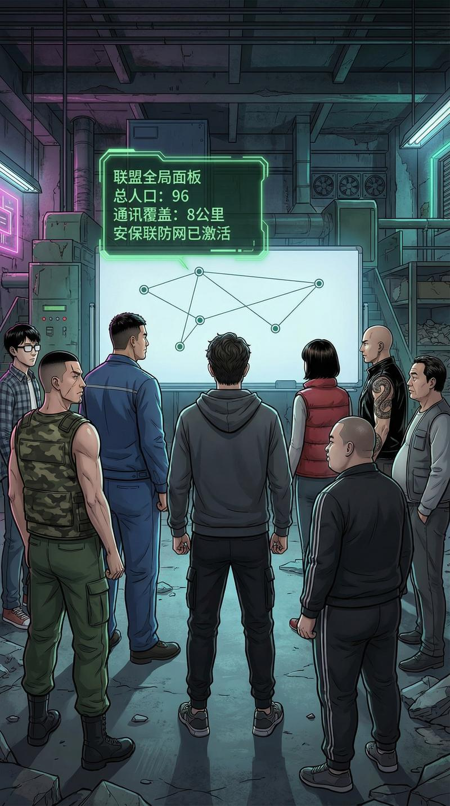
小陈那边也传来好消息——远程联络成功接入4个小据点，联盟通讯覆盖扩到8公里。
🌐 联盟：7个据点 | 总人口：96 | 通讯覆盖：8公里 | 安保联防网已激活 | 蛇哥推进路线上3个目标已全部转入联盟防线
两天时间，从33人到96人。这扩张速度——连投资人都要竖拇指。虽然这里的"投资回报"是活命。
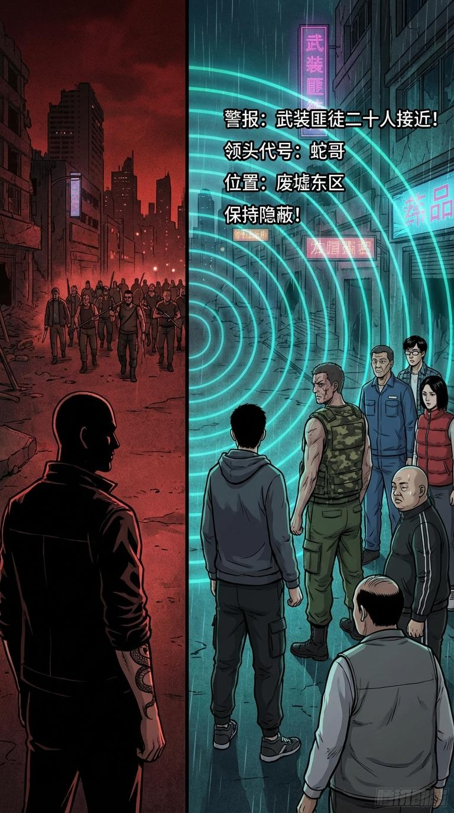
蛇哥团伙出击。20个人气势汹汹扑向下一个目标——物业公司据点。联盟预警信号同步传遍所有据点。
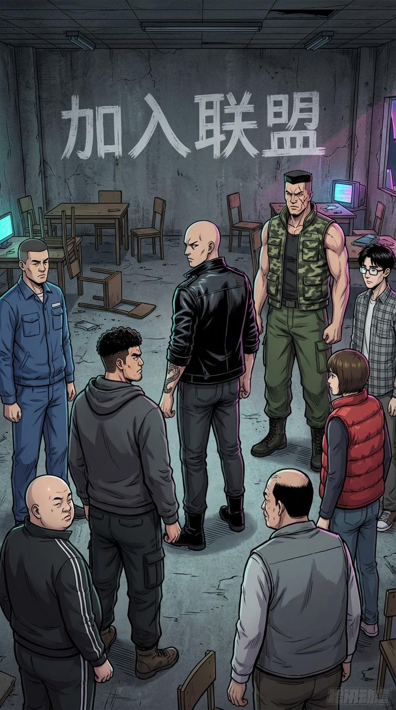
蛇哥团伙到达物业公司据点——空的。物资已经转移，人员已经撤到联防阵地。留下一面墙上用白漆写着四个大字：
加入联盟
蛇哥站在空据点中央，面无表情。
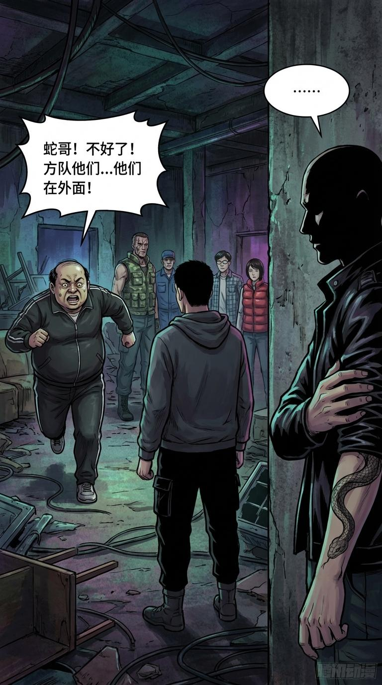
蛇哥的副手肥鱼跑过来。
哥，又空了！这已经第二个了！他们怎么知道咱来？！
蛇哥低头看那四个字。他慢慢抬手摸了一下左臂蛇纹身——那是他思考时的习惯动作。声音低沉。
有人在跟我们下棋。
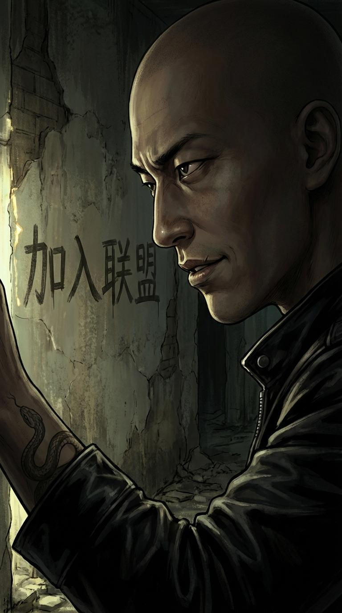
蛇哥盯着"加入联盟"四个字。嘴角微微动了一下——不是笑，是一种捕食者嗅到猎物气味的表情。
查。这个"联盟"是谁搞的。
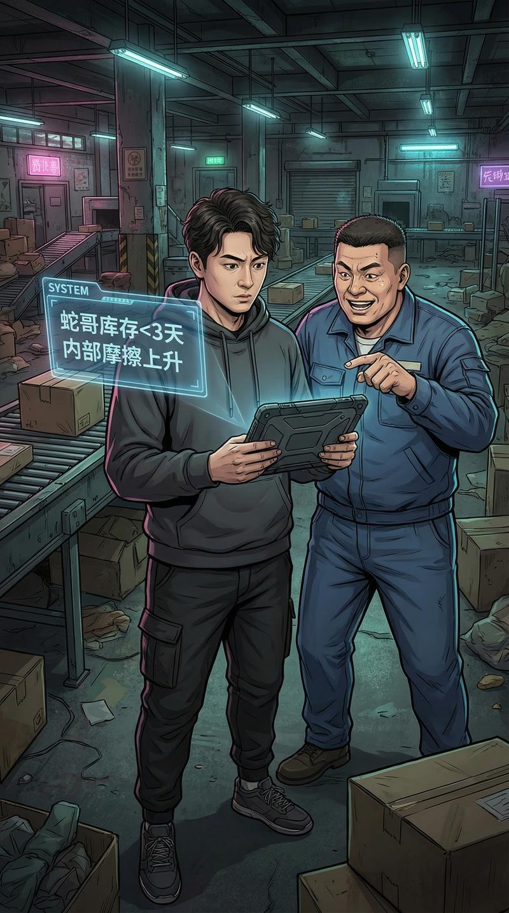
我在分拣中心收到方队的实时汇报——蛇哥连续两次扑空。
📊 蛇哥团伙物资消耗进入警戒线。预估库存<3天。内部摩擦指数上升。
老赵兴奋。
成了！饿他！
我摇头。
没这么简单。蛇哥不是普通土匪——他会变招。
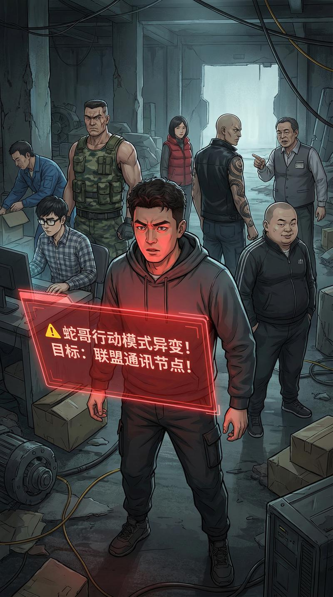
系统突然弹出警报——
⚠️ 蛇哥团伙行动模式异变！停止向北推进，转为——向西移动。目标：联盟通讯节点。
我脸色一变。
他不抢据点了——他要打我的基础设施。砍我的通讯网。这家伙……在打我的"服务器"。
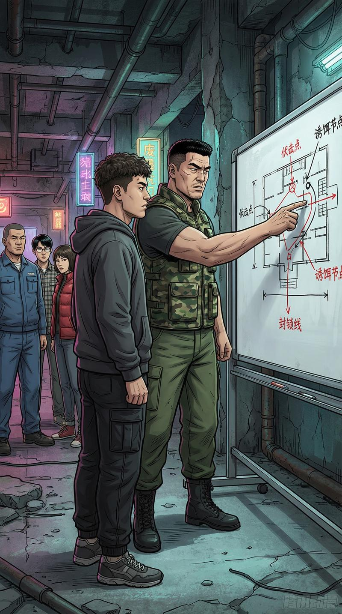
我在白板上画出蛇哥可能的攻击路线。方队第一次主动站到我旁边——两人一起规划。
方队用手指划出伏击点。
这里。这栋楼有三个出口，我们封两个留一个。
我在他必经之路放一个通讯节点——开着信号，当诱饵。系统能实时追踪他的位置，他一进伏击圈我们就——
方队接话。
——关门打狗。
方队，你这么说太粗暴了。我的说法是"漏斗转化"。
📋 方队对您的商业暗语忍耐度：正在下降。建议：减少商业术语使用。建议成功率：0%。
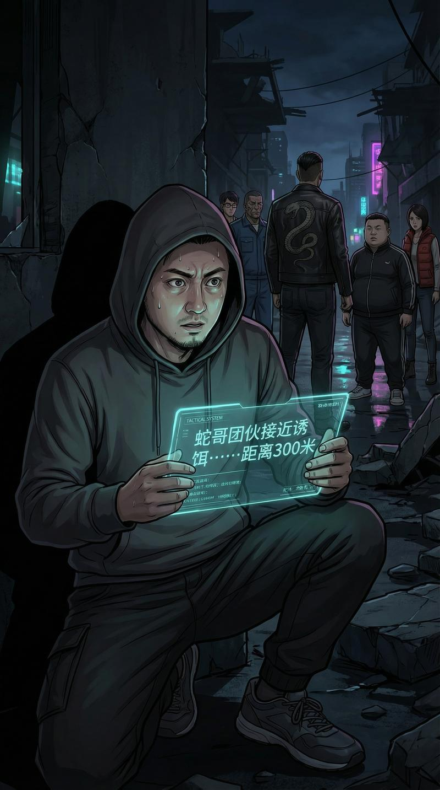
夜晚。伏击位置已经布置好。我蹲在暗处，方队和4名联盟战斗人员分布在三个点位。小陈在远程监控蛇哥团伙移动。
📡 蛇哥团伙8人出动（半数），正在接近诱饵节点……距离400米……300米……
融资路演前心跳120。现在大概180。但奇怪的是——比路演还清醒。
💪 您的肾上腺素水平：优秀。备注：末世创业似乎比写字楼创业更适合您的体质。
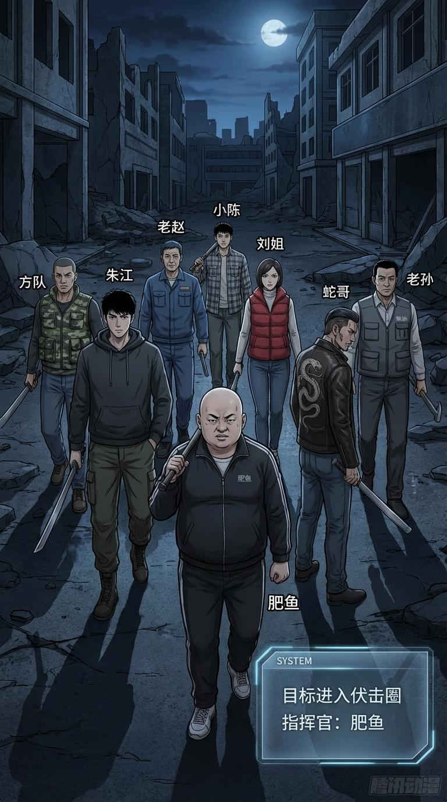
蛇哥的8人小队沿着废墟街道接近诱饵。领头的不是蛇哥本人——是肥鱼带队。他们拿着铁棍和刀，谨慎但不够。
🎯 目标已进入伏击圈。蛇哥本人未出现。对方指挥官：肥鱼，战斗力B-，智力C+。
蛇哥没亲自来……他派了副手。这老狐狸。
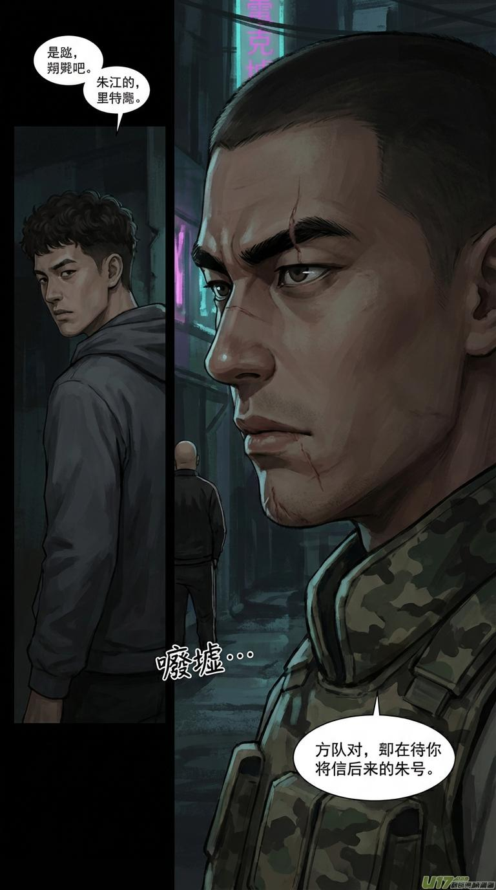
方队看向我等信号。我盯着系统定位——等肥鱼走到最深处。
⏱ 最佳时机……3……2……1……
我对方队点头。
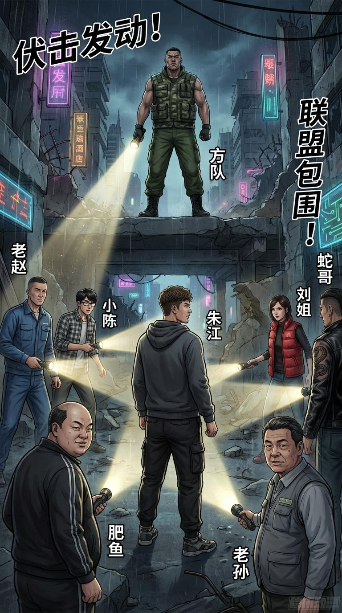
方队手势一挥——伏击发动！联盟人员从三个方向现身封锁退路。不是攻击——是包围。方队站在最高处，居高临下。
别动！你们被包围了！放下武器，给你们一条活路！
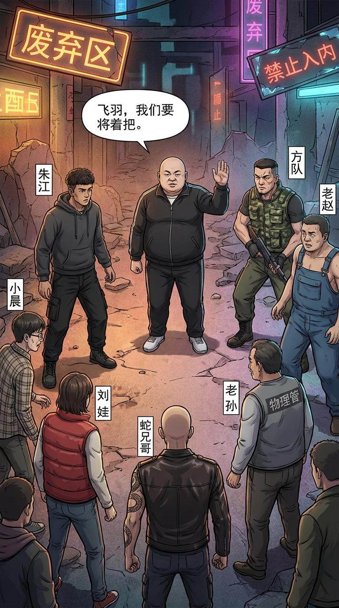
肥鱼的人慌了——但肥鱼本人意外地冷静。他环顾四周，很快看清了局势：对方人数不比自己多（6对8），但占据地形优势且有组织。
肥鱼举起手示意手下不要妄动。
你们是那个"联盟"？
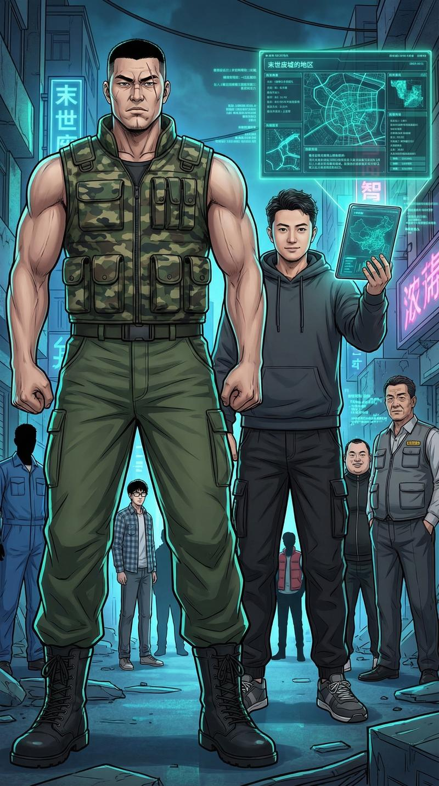
我从暗处走出来，方队挡在前面。
我是联盟负责人。你们有两个选择——
第一，放下武器，我们给你们食物和水，送你们离开这个区域。第二，打。但你们8个人被包围了，而且——
我举起平板，屏幕上显示蛇哥大本营的位置和剩余物资数据。
——你们老大只剩不到两天的粮食了。就算你们打赢了，回去也没饭吃。
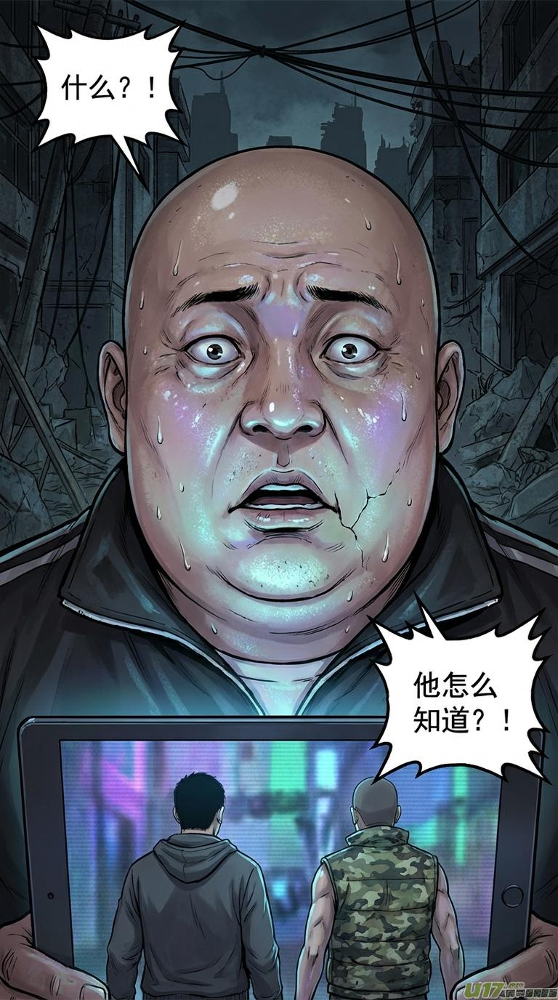
肥鱼瞪大眼——不是因为被包围，而是因为对方知道他们大本营的位置和物资情况。
你们……怎么知道的？
我微笑——不是威胁，是CEO面对客户质疑时的自信微笑。
因为我是做信息生意的。你们老大做抢劫，我做情报。你说哪个更持久？
🎯 谈判攻击力：S。肥鱼心理防线：崩溃中。补充：您刚才的微笑被系统评定为"极具商业说服力"。
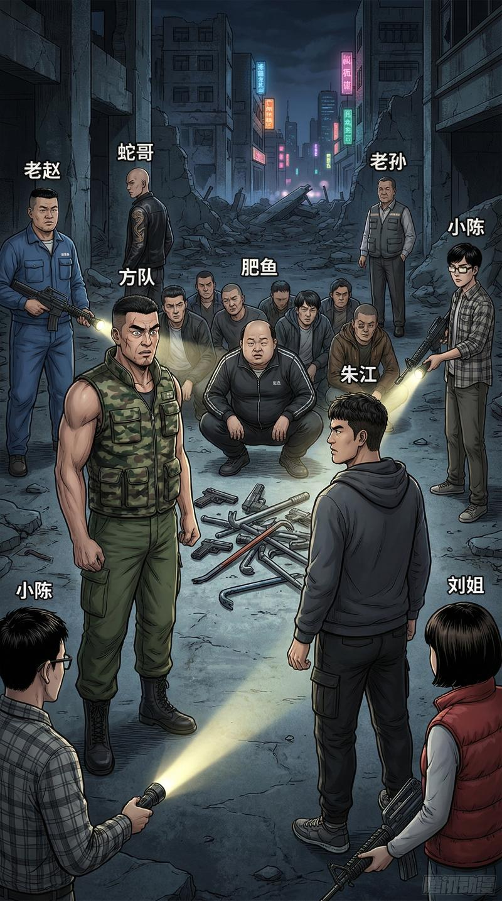
肥鱼扔了武器。他的手下也跟着扔了。8个人蹲在地上。
方队不敢置信地看着我——20个人的掠夺团伙，一枪没开，瓦解了一半。
你这CEO……打仗比我们还狠。
我只是把投资人谈判那套用在了这里。不过老赵说得对——这确实比PPT刺激。
🏆 恭喜完成"敌对势力分化收编"。经验+30。您正在解锁"末世并购"成就。距等级4：还差15点。
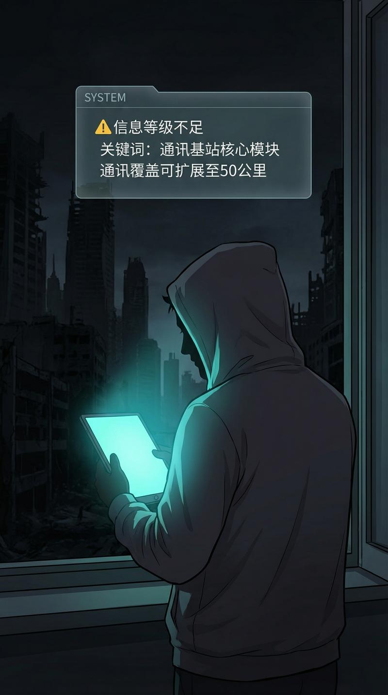
深夜。分拣中心。肥鱼被隔离审讯，方队得到了关键情报——蛇哥还有12人，但更重要的是：蛇哥不是普通的黑产。他在大断裂前就在运营一个跨城物流网络。而且……他手里有一样东西。
我站在窗前，看着平板上系统显示的信息。
⚠️ 蛇哥持有物品鉴定：信息等级不足，等级3无法完全解析。已知关键词："通讯基站核心模块"。获取后可将通讯覆盖从10公里扩展到——50公里。
50公里覆盖……那是半个城市。那东西在蛇哥手里——他不知道它的价值，但我知道。
📋 您的表情又变成了那种"发现了被严重低估的资产"的样子。温馨提醒：这次的"低估资产"在一个武装暴徒手里。祝好运。